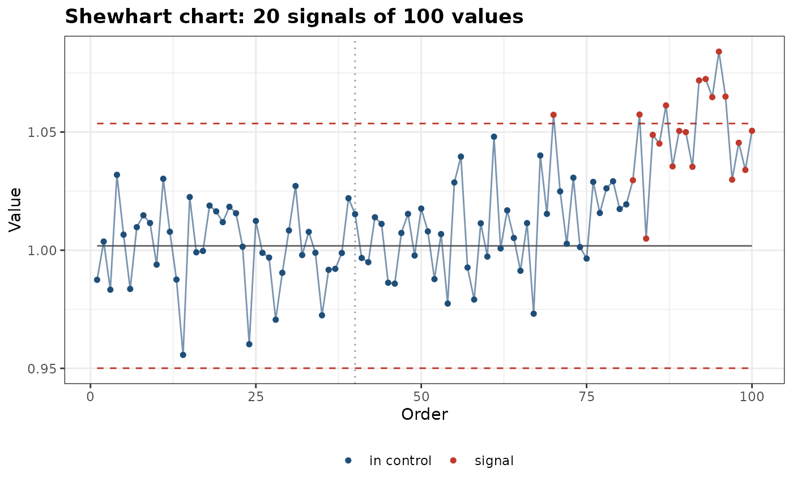
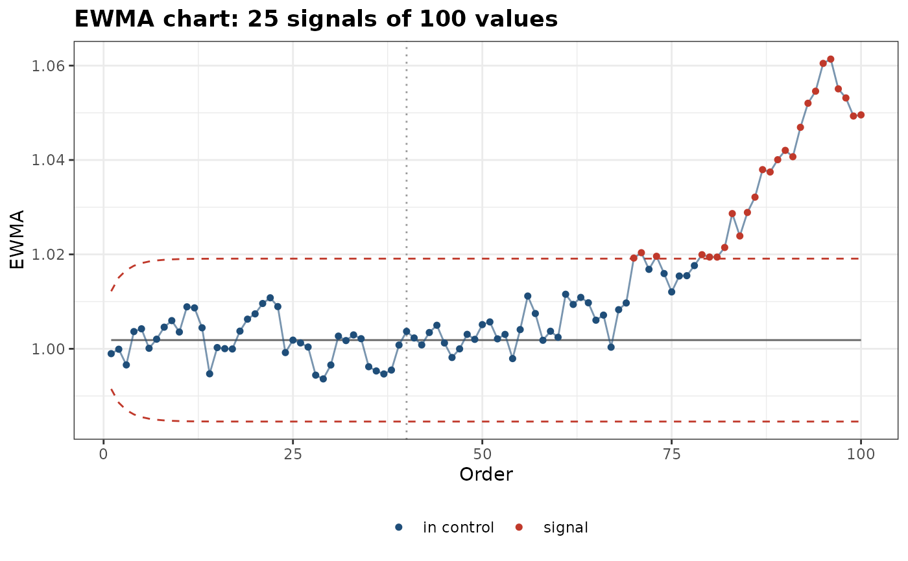

Builds a control chart of a quantity that should stay constant over time, such as the intensity of an internal standard line, a line ratio of a check sample or a plasma temperature, to detect drifts and shifts of the instrument: a Shewhart chart of individual values, an exponentially weighted moving average (EWMA) or a cumulative sum (CUSUM).
Usage
control_chart(
x,
order = NULL,
method = "shewhart",
baseline = NULL,
center = NULL,
sigma = NULL,
width = 3,
rules = TRUE,
lambda = 0.2,
allowance = 0.5,
decision = 5
)Arguments
- x
A numeric vector of the monitored quantity.
- order
The time or acquisition order of the values (numbers, dates or date-times), by which they are sorted. By default, their position.
- method
"shewhart"(default),"ewma"or"cusum".- baseline
The measurements that set the center and the standard deviation: the number of first values, or a logical or index vector. By default, all values.
- center, sigma
The center and standard deviation of the process, if known.
- width
The width of the limits, in standard deviations, for the Shewhart and EWMA charts. Default is 3.
- rules
A logical: apply the Western Electric rules to the Shewhart chart (
TRUE, default).- lambda
The smoothing constant of the EWMA chart. Default is 0.2.
- allowance, decision
The allowance \(k\) and decision interval \(h\) of the CUSUM chart, in standard deviations. Default is 0.5 and 5.
Value
A tibble of class specproc_control_chart, one row per value in
time order: order, value, the plotted statistic (the value, the
EWMA, or for the CUSUM the upper sum, with the lower sum in
lower_sum), the center, the lower and upper limits, whether the
point is a signal, and, for the Shewhart chart, the first Western
Electric rule broken. The method, center, standard deviation and
baseline are in the attributes. Draw it with plot_control_chart().
Details
The center line and the standard deviation \(\sigma\) are estimated
from the baseline measurements (by default, all of them), unless given:
the mean, and the mean moving range of consecutive values divided by
1.128, which, unlike the standard deviation, is little inflated by a
drift.
"shewhart": the values themselves, with limits atwidth\(\sigma\) from the center. Withrules = TRUE, the Western Electric rules also flag (1) a value beyond the limits, (2) two of three consecutive values beyond \(2\sigma\) on the same side, (3) four of five beyond \(1\sigma\) on the same side and (4) eight consecutive values on the same side of the center. It detects large shifts quickly."ewma": \(z_t = \lambda x_t + (1 - \lambda) z_{t-1}\), starting at the center, with limits atwidth\(\sigma \sqrt{\lambda / (2 - \lambda) (1 - (1 - \lambda)^{2t})}\). Small values of \(\lambda\) detect small, slow drifts."cusum": the tabular CUSUM, the sums of the deviations beyondallowance\(\sigma\) above and below the center, \(C^+_t = \max(0, x_t - \mu - k\sigma + C^+_{t-1})\) and likewise below, with a signal when a sum exceedsdecision\(\sigma\). It detects small persistent shifts.
References
Montgomery, D.C. (2019). Introduction to Statistical Quality Control, 8th ed. Wiley, Hoboken.
Western Electric Company (1956). Statistical Quality Control Handbook. Western Electric, Indianapolis.
Examples
# a check-sample ratio that drifts after the 60th measurement
set.seed(1)
ratio <- 1 + c(rep(0, 60), seq(0, 0.06, length.out = 40)) + rnorm(100, sd = 0.02)
shewhart <- control_chart(ratio, baseline = 40)
shewhart[shewhart$signal, ]
#> # A tibble: 20 × 8
#> order value statistic center lower upper signal rule
#> <int> <dbl> <dbl> <dbl> <dbl> <dbl> <lgl> <int>
#> 1 70 1.06 1.06 1.00 0.950 1.05 TRUE 1
#> 2 82 1.03 1.03 1.00 0.950 1.05 TRUE 3
#> 3 83 1.06 1.06 1.00 0.950 1.05 TRUE 1
#> 4 84 1.00 1.00 1.00 0.950 1.05 TRUE 4
#> 5 85 1.05 1.05 1.00 0.950 1.05 TRUE 2
#> 6 86 1.05 1.05 1.00 0.950 1.05 TRUE 2
#> 7 87 1.06 1.06 1.00 0.950 1.05 TRUE 1
#> 8 88 1.04 1.04 1.00 0.950 1.05 TRUE 3
#> 9 89 1.05 1.05 1.00 0.950 1.05 TRUE 2
#> 10 90 1.05 1.05 1.00 0.950 1.05 TRUE 2
#> 11 91 1.04 1.04 1.00 0.950 1.05 TRUE 3
#> 12 92 1.07 1.07 1.00 0.950 1.05 TRUE 1
#> 13 93 1.07 1.07 1.00 0.950 1.05 TRUE 1
#> 14 94 1.06 1.06 1.00 0.950 1.05 TRUE 1
#> 15 95 1.08 1.08 1.00 0.950 1.05 TRUE 1
#> 16 96 1.07 1.07 1.00 0.950 1.05 TRUE 1
#> 17 97 1.03 1.03 1.00 0.950 1.05 TRUE 3
#> 18 98 1.05 1.05 1.00 0.950 1.05 TRUE 2
#> 19 99 1.03 1.03 1.00 0.950 1.05 TRUE 3
#> 20 100 1.05 1.05 1.00 0.950 1.05 TRUE 2
plot_control_chart(shewhart)

# the EWMA detects the slow drift earlier
plot_control_chart(control_chart(ratio, method = "ewma", baseline = 40))
